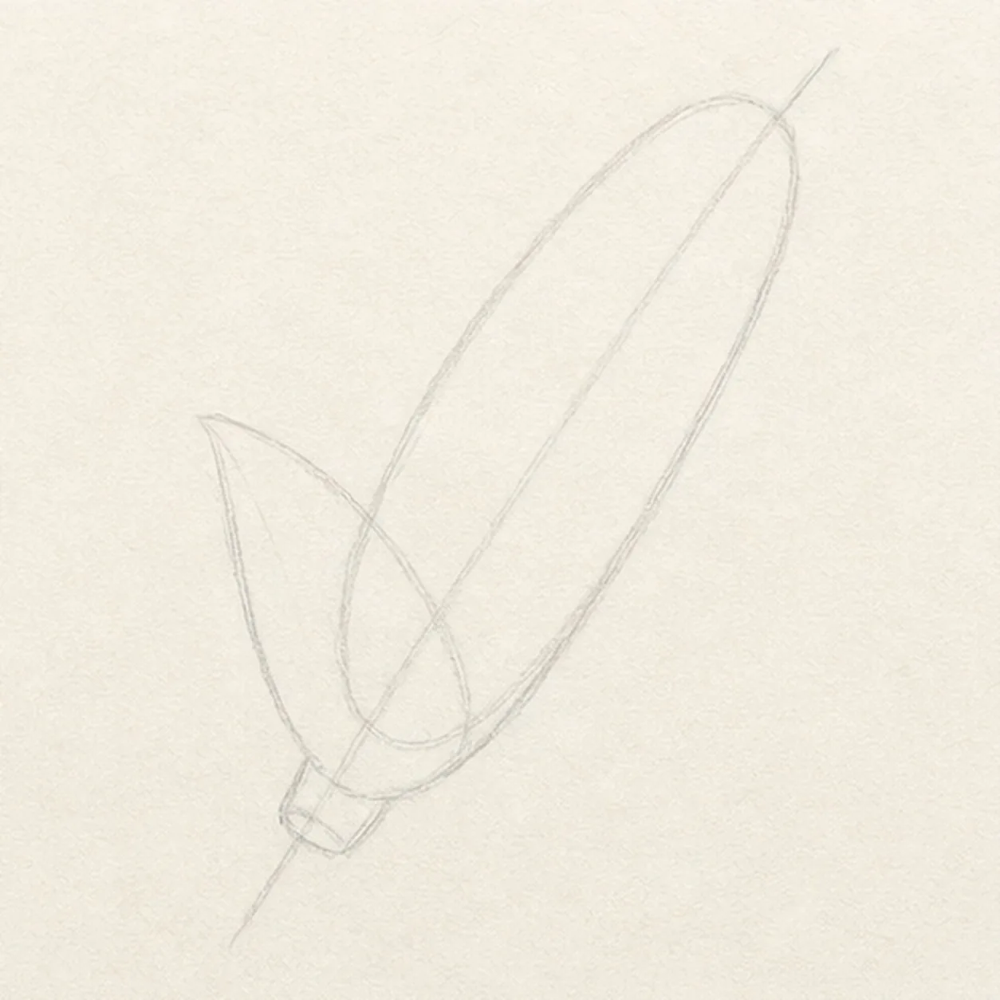
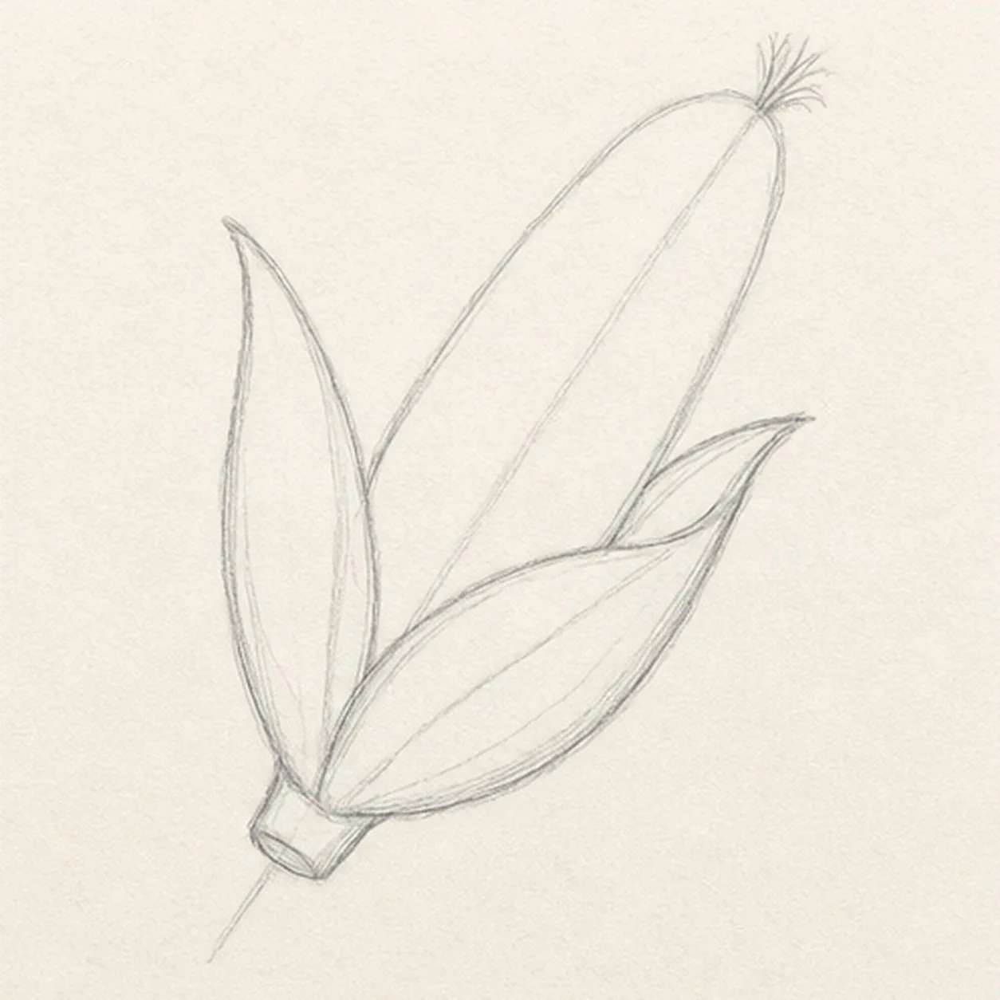
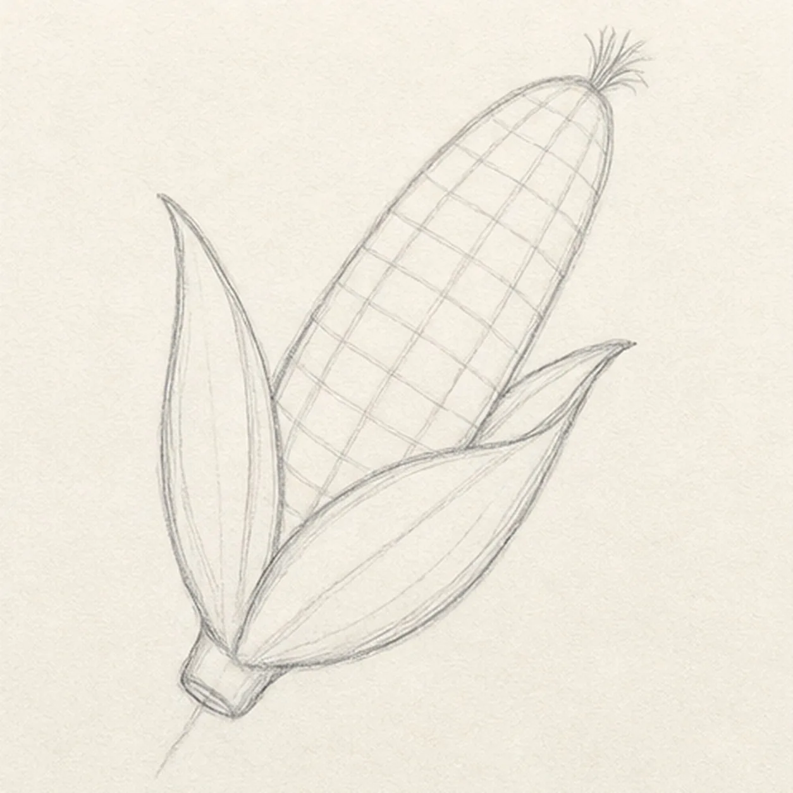
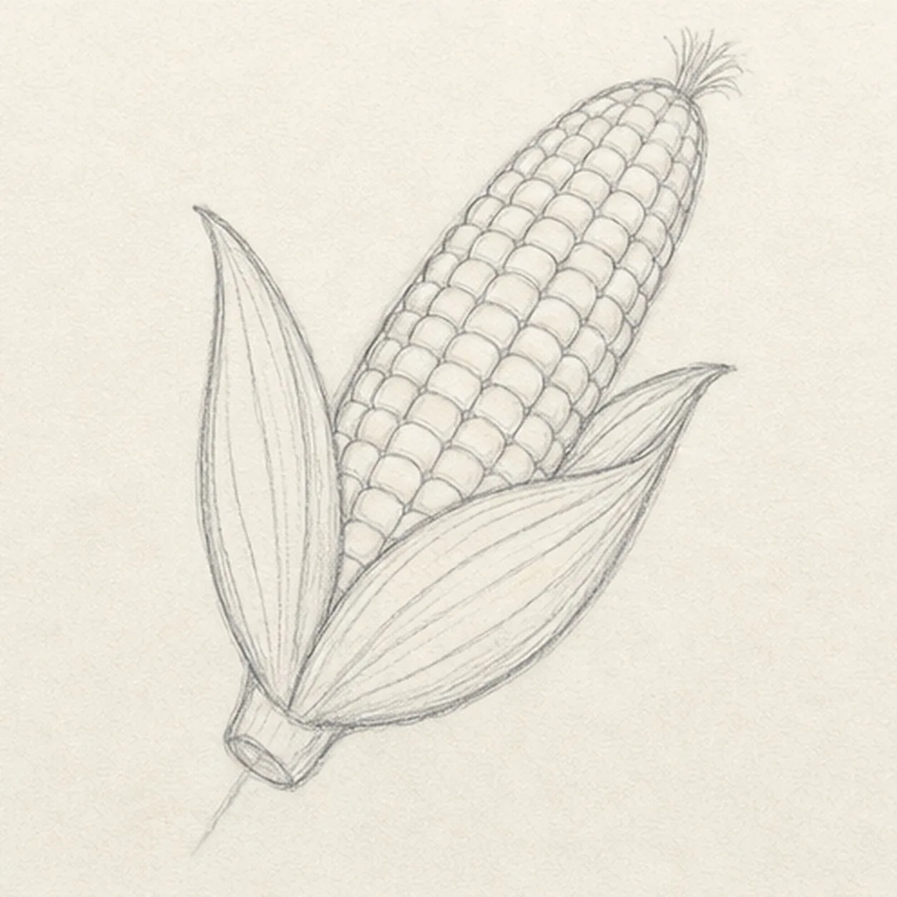
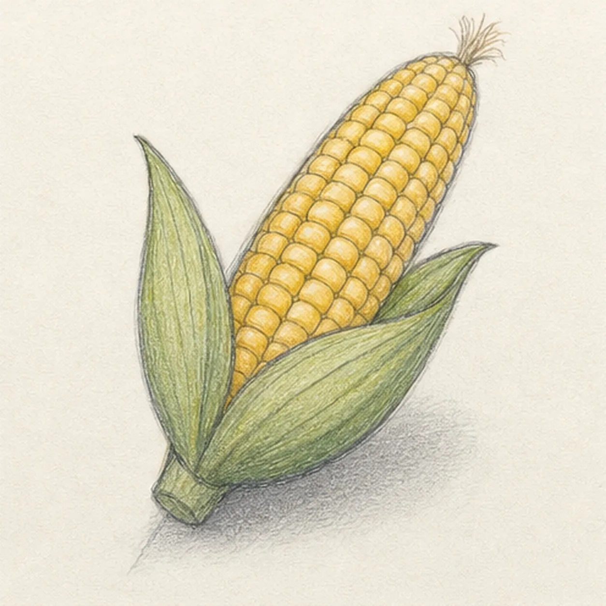

From the archive
Let's draw an ear of corn with peeled husks
Treat this as one small practice round: build the subject lightly, notice the shapes, then darken only the lines that help the finished sketch.
-
01

Block the cob angle
Draw a light diagonal axis, wrap a tapered oval around it for the cob, and place a wider leaf envelope around the lower half.
Sketch tip: Ghost the long axis two or three times before touching down. A relaxed diagonal gives the cob energy and keeps the husks from feeling stiff.
-
02

Peel back the husks
Build two overlapping pointed husks around the reserved cob opening, then add a short stem nub at the base and a small silk tuft at the tip.
Sketch tip: Compare the two empty wedges between the cob and the husks. They can differ, but both should stay open enough for the corn silhouette to read.
-
03

Shape the exposed cob
Clarify the rounded cob taper inside the husks, then draw gently curved horizontal and lengthwise guides that wrap around its volume.
Sketch tip: Rotate the page for the long guide curves. Let the cross-guides bow more near the middle and flatten toward the tapered ends.
-
04

Set the kernel rows
Fill the existing guide grid with staggered rounded kernels, then add a few long veins inside the established husks.
Sketch tip: Work one short row at a time and offset each kernel from the row beside it. Keep the lower kernels hidden where the opaque husks overlap the cob.
-
05

Layer the harvest colors
Add golden yellow to the drawn kernels, leafy green to the husks, pale tan to the silk, and a soft graphite shadow below.
Sketch tip: Pull colored-pencil strokes in the direction of each form and leave small paper highlights on the kernels. A light first pass keeps the graphite readable.
-
06

Finish the corn sketch
Strengthen the keeper contours and clarify the established kernels, husk veins, silk, restrained color, and ground shadow.
Sketch tip: Squint at the drawing once: the yellow cob should read first, with the two green husks supporting it. Stop before adding a plate, basket, or extra produce—the single ear is already complete.